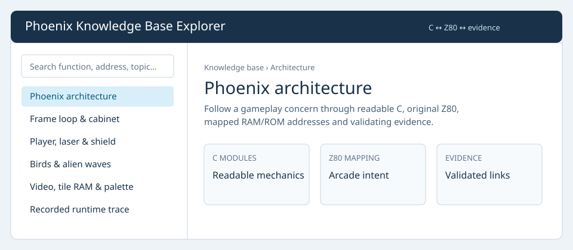
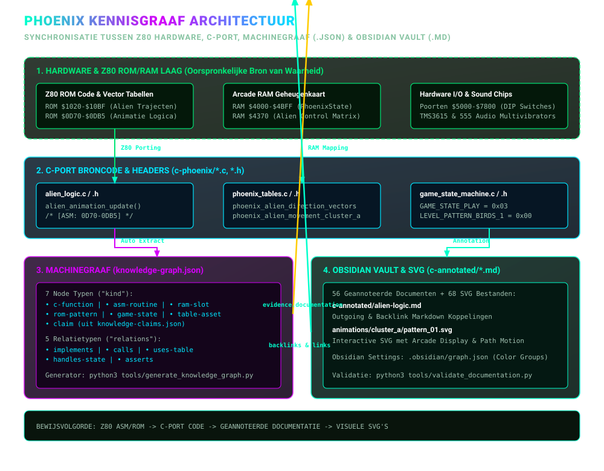
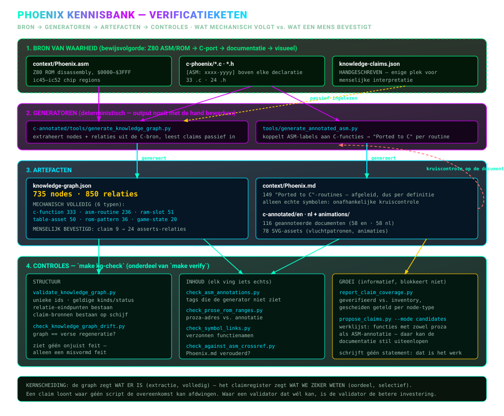

Welkom bij de C & Header-Annotated Knowledge Graph
Documentatie voor de C-port van de Phoenix Arcade Game
(c-phoenix).
Deze directory bevat een volledige verzameling van 56
diepgaande geannoteerde documenten (32 .c
bronbestanden + 24 .h headerbestanden), waarin elk
onderdeel uit het project tot op functie-, geheugenkaart- en
hardwarepoort-niveau wordt ontleed en onderling met elkaar is
verbonden.
Het doel van deze documentatieset is het bieden van een navigeerbare, interactieve Knowledge Graph over de geporteerde C-codebase van Phoenix.
Elke functie, structuur en header in elk document is voorzien van:
$4370, $4B50), registers,
vlaggen en bitwise maskers.[phoenix_state.h](../../phoenix_state.h#L8)).De bron van waarheid is, in deze volgorde: Z80 ASM/ROM → C-port → deze geannoteerde analyse → visuele toelichting. Technische conclusies in de analyse horen daarom naar de relevante ASM-range, ROM-tabel of C-routine te verwijzen; conclusies zonder zo'n koppeling zijn interpretaties die nog gecontroleerd moeten worden.
De machineleesbare kern en de instructies voor regeneratie staan in
knowledge-graph.md; de
gegenereerde data staat in knowledge-graph.json.
Open de Knowledge
Base Explorer om de gevalideerde graaf te doorzoeken en relaties te
volgen tussen C-functies, Z80-routines, RAM/ROM-nodes, states, claims en
de bestaande documentatie. Hij wordt uit
knowledge-graph.json gegenereerd, voegt zelf geen claims
toe en opent rechtstreeks via file://.

Van de Z80-hardware uit 1980 onderaan tot de doorbladerbare notities die je nu leest:

Niets hierin berust alleen op handwerk. Bronnen voeden generatoren, generatoren maken artefacten, en een reeks controles bewaakt de hele keten:

Elk .c-bestand hieronder heeft hier een geannoteerde
pagina, maar die staan niet los van elkaar: één lezen betekent meestal
eerst twee of drie andere lezen. De ontwerptijd-grafen in ../../context/graphs/
tonen die structuur, gegenereerd uit dezelfde broncode die deze pagina's
annoteren.
.c-bestand, gegroepeerd in architectuurclusters.
Gebruik hem om te zien welke geannoteerde pagina's je erbij nodig hebt,
en tot welk cluster een bestand behoort.[ASM: nnnn-nnnn]-tag uit hun
doc-commentaar, dezelfde tag die de annotaties gebruiken. De brug tussen
deze pagina's, context/mapping/
en Phoenix.asm.Die grafen zijn een kaart, geen bewijs: ze komen uit een tekstuele scan, dus lees hun README voor wat die scan niet ziet.
../../animations/nl/README.md
🎬 — Visuele animatiegids & SVG-analyse van alle
vogel-animaties en vliegtrajecten in
c-phoenix/animations/.../../animations/nl/animation-trajectory.md
🚀 — Analyse van alle voorgeschreven vliegpatronen,
ROM-clusters, vectoren en AI-scripts.../../animations/nl/animation-trajectory-detailed.md
📐 — Gedetailleerde stap-voor-stap coördinatentabellen op het
scherm-grid per individueel patroon.../../animations/nl/bird-animations.md
🦅 — Analyse van de vogel-animatiefases.phoenix-state-h.md —
Arcade RAM Geheugenkaart (PhoenixState struct, $4000–$4BFF)
(phoenix_state.h).phoenix-hw-h.md —
Hardware I/O poorten ($5000, $5800,
$6000, $6800, $7000,
$7800) en DIP-switches (phoenix_hw.h).game-constants-h.md —
PhoenixGameState en LEVEL_PATTERN_* enums en
knoppen-maskers (game_constants.h).phoenix-tables-h.md —
Declaraties van ROM-opzoektabellen (phoenix_tables.h).z80-core-h.md — Z80 CPU
bitrotatie en hulp-macros (z80_core.h).alien-logic.md / alien-logic-h.md —
Zwerm-aliens, vliegpatronen en explosieslots (alien_logic.c
/ alien_logic.h).alien-wave.md — Hoofdlus
voor alien-waves (level 1, 3 & B), 4-frame interleaving en
sterren-scrolling (alien_wave.c).bird-logic.md / bird-logic-h.md — Hoofdlus voor
vogel-waves (levels 5 & 7) (bird_logic.c /
bird_logic.h).bird-wave-behavior.md —
Vogel-toestandsmachine, ei-uitbroeden en duikvluchten
(bird_wave_behavior.c).birds-vertical-movement.md
— Verticale scroll-registers (B4BD2) en afdaalsnelheden
(birds_vertical_movement.c).mothership-impl.md —
Moederschip tegel-inslag detectie, schild-doorboring en kern-explosies
(mothership_impl.c).mothership-logic.md /
mothership-logic-h.md —
Wissen van het moederschip en bonusscore-berekening
(mothership_logic.c /
mothership_logic.h).player-logic.md / player-logic-h.md —
Spelerschip besturing, schild-activatie (5s krachtveld) en kogelspawning
(player_logic.c / player_logic.h).player-explosion.md —
Fragment-rendering en deeltjes-spatrasters
(player_explosion.c).collision-detection.md —
VRAM tegel- & pixelmasker botsingen met vogels/eieren
(collision_detection.c).weapon-collision.md /
weapon-collision-h.md —
Spelerkogels vs aliens, vijandelijke bommen en speler botsingen
(weapon_collision.c /
weapon_collision.h).scoring.md — BCD-score
optelling, High Score vergelijkingen en bonusleven-drempels
(scoring.c).game-state-machine.md / game-state-machine-h.md
— Centrale toestandsmachine (States 0 t/m 7)
(game_state_machine.c /
game_state_machine.h).attract-mode.md / attract-mode-h.md —
Splash-scherm sequencer, munten/credits en demo
(attract_mode.c / attract_mode.h).state-init.md / state-init-h.md — Level- &
game-initialisatie (State 2) (state_init.c /
state_init.h).state-play.md / state-play-h.md — Level
dispatcher voor 12 levelfases (state_play.c /
state_play.h).state-endings.md / state-endings-h.md —
Spelersexplosie (State 4), Game Over (State 5), Moederschipexplosie
(State 6) (state_endings.c /
state_endings.h).init-global-level-data.md
— Kopieert 12 configuratiebytes per levelpatroon naar RAM
(init_global_level_data.c).misc-logic.md —
Achtergrond-sterrenstelsels en willekeurige bommen
(misc_logic.c).hw-video-audio.md / hw-video-audio-h.md — Main
loop entry point (RESET), 60Hz VBlank
(hw_video_audio.c / hw_video_audio.h).sprite-rendering.md /
sprite-rendering-h.md —
1x1, 2x1, 1x2 en 2x2 sprite rendering (sprite_rendering.c /
sprite_rendering.h).sound.md / sound-h.md — Audio mixer &
44.1kHz frame renderer (sound.c /
sound.h).sound-discrete.md / sound-discrete-h.md —
555-multivibratoren, RC-circuits en Poly18 ruis
(sound_discrete.c / sound_discrete.h).sound-dispatcher.md —
Z80 per-frame sound dispatcher ($3A10), sirenes,
intro-melodie (sound_dispatcher.c).tms36xx.md / tms36xx-h.md — Texas Instruments
TMS3615 / MM6221AA synthesizers (tms36xx.c /
tms36xx.h).mame-lofi-resampler.md /
mame-lofi-resampler-h.md
— 4-punts kubische resampler (mame_lofi_resampler.c /
mame_lofi_resampler.h).phoenix-tables.md —
Geëxtraheerde Arcade ROM opzoektabellen
(phoenix_tables.c).utilities.md / utilities-h.md — RAM/VRAM
abstracties (mem_read/mem_write), BCD-print
(utilities.c / utilities.h).platform-sdl.md — SDL2
vensterbeheer en VRAM-bankswapping (platform_sdl.c).coverage.md / coverage-h.md —
Runtime-instrumentatie voor lockstep-testen (coverage.c /
coverage.h).rom-compat-stubs.md —
ROM-compatibiliteit stubs en "AMSTAR" copyright-check
(rom_compat_stubs.c).runtime-call-trace.md —
Binaire profiling hooks (runtime_call_trace.c).phoenix-render-assets-h.md
— Tegel-assets en kleurenpaletten
(phoenix_render_assets.h).walkthrough.md —
Samenvatting en opleveringsdocument.